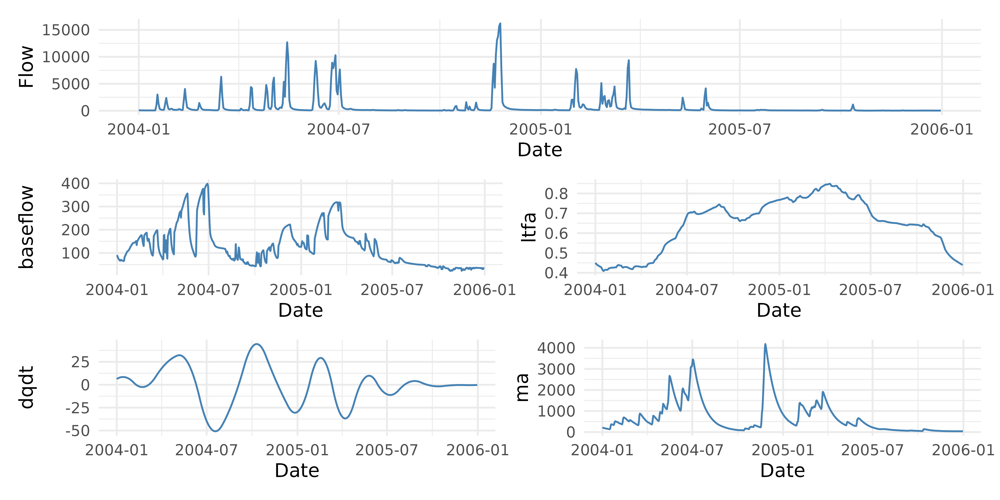

Basic Functions
The adc package provides a handful of functions for developing flow-based covariates useful in regression-based pollutant load modeling. The primary package functions include:
bf_sep_lh()- uses the Lyne and Hollick filter to separate baseflow component from the quickflow component (Lyne and Hollick 1979). Baseflow/Total Flow provides a baseflow index that is an estimate of the contribution of slow flow to total streamflow. This index can be useful for capturing relationships of subsurface solutes and streamflow. The function implements the approach described by Ladson et al. (2013).fa()- calculates the flow anomaly, or the difference in flow for the current time period (day, week, month, year, etc.) from a prior period (days, weeks, months, years, or complete flow record) (Vecchia et al. 2009). Positive values indicate the current period is wetter than the prior period. Zhang and Ball (2017) demonstrate the use of different time periods to account for long-term, mid-term, and short-term flow anomalies.rate_of_change()- is the estimate of the current instantaneous rate of change in daily streamflow. This is essentially an estimate of the difference in streamflow at time \(T\) and \(T-1\) (Zhang and Ball 2017). Positive values mean streamflow is increasing and negative values mean streamflow is decreasing. This term can capture hysteresis effects in dissolved solutes and hydrograph limbs. This function estimates \(\frac{d Q}{d t}\) on the raw data or it will fit a cubic regression spline between date and discharge when the argumentsmooth = TRUEis used and return the derivative of the fitted function.sdf()- the smooth discounted flow is an exponentially weighted average of streamflow values (Kuhnert et al. 2012). This captures the integrated effect of all past flows with higher weight assigned to more recent flows than those that occurred long ago.
Usage
All functions are intended to work on vectors of streamflow and Date/Time data. Each function will return a numeric vector the same length as the input arguments. An example dataset is provided:
library(adc)
data("lavaca")
## run the lyne and hollick baseflow seperation filter
baseflow <- bf_sep_lh(discharge = lavaca$Flow,
a = 0.975)
## calculate the baseflow index
bfi <- baseflow/lavaca$Flow
head(bfi)
#> [1] 0.2336661 0.2458989 0.2579990 0.2327504 0.1922516 0.2004877
## calculate flow anomalies
#long term flow anomaly described in Zhang & Ball (2017)
ltfa <- fa(lavaca$Flow,
dates = lavaca$Date,
T_1 = "1 year",
T_2 = "period",
clean_up = TRUE,
transform = "log10")
head(ltfa)
#> [1] NA -0.7490517 -0.7490517 -0.7490517 -0.7329372 -0.7028938
## rate of change
dqdt <- rate_of_change(lavaca$Flow, lavaca$Date)
head(dqdt)
#> [1] 0.07163096 -0.01050499 -0.08719290 -0.15843278 -0.22422462 -0.28456842
## smooth discounted flow
ma <- sdf(lavaca$Flow, delta=0.95)
head(ma)
#> [1] 7.5000 7.5000 7.5000 7.5600 7.7320 7.8954Tidy Workflow
These functions can also be used in a tidy workflow:
library(dplyr)
library(ggplot2)
library(patchwork)
## create new column variable
lavaca |>
mutate(baseflow = bf_sep_lh(Flow, a = 0.975),
ltfa = fa(Flow, Date, T_1 = "1 year",
T_2 = "period", clean_up = TRUE,
transform = "log10"),
dqdt = rate_of_change(Flow, Date),
ma = sdf(Flow)) |>
filter(Date >= as.Date("2004-01-01") & Date <= as.Date("2005-12-31"))-> df
##plot
## we are going to create a function to do this
plot_columns <- function(data, column, x_axis) {
ggplot(data, aes_string(x = x_axis, y = column)) +
geom_line(color = "steelblue") +
labs(x = "Date", y = column) +
theme_minimal()
}
## apply the function to each variable
plots <- lapply(c("Flow", "baseflow", "ltfa", "dqdt", "ma"),
plot_columns,
data = df,
x_axis = "Date")
## use patchwork to put these all together
plots[[1]] / (plots[[2]] + plots[[3]]) / (plots[[4]] + plots[[5]])